Кто выступал
Наталья Андреевна, экономист Отделения Ярославль Банка России (Главное управление по Центральному федеральному округу): региональный экономический анализ, коммуникация, финансовая грамотность. Встреча шла 1 ч 50 мин; почти половина — вопросы слушателей-руководителей.
Запись диктофонная, из зала: часть цифр восстановлена по смыслу и сверена с сайтом Банка России. Такие места помечены ➕.
Что встреча дополняет
- «Экономика для менеджеров», урок 1: номинальное и реальное, личная инфляция, модель AD–AS.
- Урок 2: экономические циклы, дефицит бюджета, эффект вытеснения.
- 05.11 в курсе экономики — тема «Инфляция и безработица»: эта страница — хорошая подготовка к ней.
Аттестации по дополнительным лекциям нет. Вместо «на экзамене» — «🛠 в работе руководителя».
Цель политики: расти у потенциала и не раскачиваться
С чего начала лектор: прежде чем говорить о ставке, договориться, к чему вообще стремится экономическая политика.
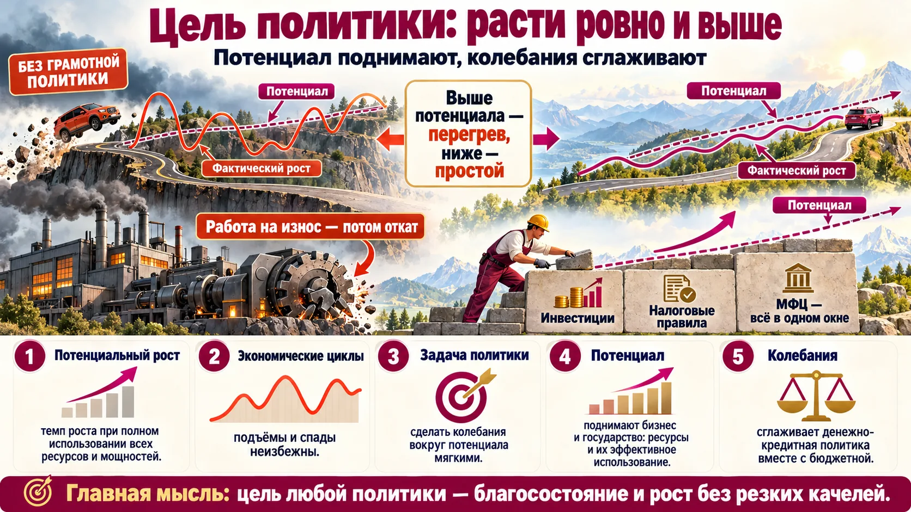
- Выше потенциала прыгнуть можно ненадолго: работа «на износ», станок в три смены — потом откат.
- Ниже потенциала — тоже плохо: ресурсы простаивают.
- Экономические циклы (подъём — спад) неизбежны. Задача — сгладить колебания вокруг потенциала, а сам потенциал поднять.
- Потенциал поднимают бизнес (инвестиции) и государство (налоги, институты). Пример лектора — МФЦ: «всё в одном окне» экономит время людей и бизнеса.
- Колебания сглаживает денежно-кредитная политика вместе с бюджетной.
- Политики работают в связке и согласуются на уровне правительства.
У компании своя цель — клиенты и прибыль, но она зависит от благосостояния общества: «богатые клиенты — платёжеспособные». Когда экономика выше потенциала, вы видите это у себя как нехватку людей и мощностей и рост зарплат; ниже — как падение заказов. Это сигнал, в какую сторону будет двигаться ставка.
Потенциальный ВВП и разрыв выпуска
Потенциальный ВВП — объём производства при «нормальной» загрузке труда и капитала, без разгона инфляции. Разница между фактическим и потенциальным ВВП — разрыв выпуска: положительный означает перегрев, отрицательный — недоиспользование ресурсов. ➕ Банк России оценивает разрыв выпуска в каждом макропрогнозе (документ «Основные направления ДКП»). Подробнее о циклах — в уроке 2 по экономике.
Тиски: Центральный банк и бюджет
Две политики сжимают цикл с двух сторон. Хорошо, когда давят в одну сторону.
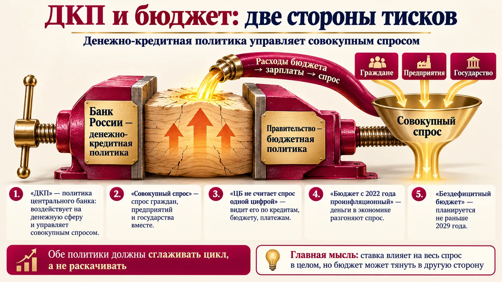
Совокупный спрос — спрос всей экономики: граждан, предприятий (в том числе на промежуточную продукцию и логистику) и государства (госзаказ). ЦБ не считает его одним числом — видит по статистике кредитов, бюджета, платежей.
ДКП влияет на весь спрос в целом и через него — на инфляцию. На предложение и потенциал ставка напрямую не действует.
С 2022 года бюджетная политика проинфляционная: оборонный заказ → зарплаты → спрос → гонка цен. Бездефицитный бюджет планируется только к 2029 году. Бюджет «очень мешает» денежно-кредитной политике; планы бюджета меняются каждый месяц, и региональное отделение «подвергает их сомнению».
- Бюджетный импульс: выплаты семьям участников СВО, зарплаты на оборонных заводах, работающих в несколько смен. Спрос не обеспечен предложением — покупали технику, недвижимость, «всё подряд».
- Слушатель: «рабочие решили, что зарплата должна быть ×3 — на оборонном заводе платят 150».
- Льготная ипотека, по словам лектора, — не социальная программа, а поддержка девелоперов в кризис; неадресная, её брали как инвестицию, по несколько штук, и она тоже разгоняла цены. «Пример недостаточно продуманной политики».
- Слушатели-строители: рост зарплат упёрся в неактуальные сметы госзаказа, специалистов найти невозможно.
Когда государство берёт в долг, чтобы финансировать дефицит, оно конкурирует с бизнесом за деньги и поднимает ставки — это эффект вытеснения. Тренажёр — в курсе экономики.
Инфляция — градусник экономики
По одному показателю видно состояние всей экономики. Важно правильно его читать.
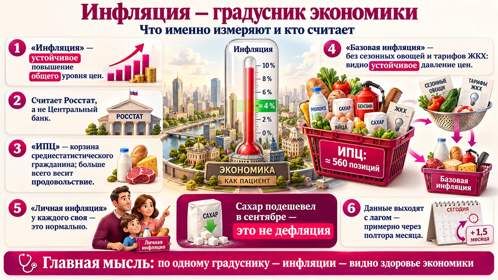
Летом дешевеют овощи, в сентябре — сахар (новый урожай свёклы). Это не дефляция, а снижение цен отдельных товаров в определённый период по определённой причине.
| Показатель | Что это | Зачем смотреть |
|---|---|---|
| ИПЦ | индекс потребительских цен по корзине среднестатистического гражданина; считает Росстат, а не ЦБ | официальная инфляция, по ней ставится цель 4 % |
| Базовая инфляция | ИПЦ без плодоовощной продукции и тарифов ЖКХ — без сезонных и административных факторов | видно устойчивое давление цен |
| Личная инфляция | рост цен вашей собственной корзины (дети, мясо или нет и т. д.) | у каждого своя — это нормально |
| ИАМ | информационно-аналитический материал об инфляции в регионе — отделения ЦБ публикуют каждый месяц | что подорожало именно у вас и почему |
- Корзина — около 560 позиций, больше всего весит продовольствие. ➕ Росстат, 2026: 558 позиций.
- Набор единый для страны; регистраторы ходят в магазины и фиксируют цены одних и тех же товаров; выбывший товар заменяют сопоставимым.
- Данные выходят с лагом около полутора месяцев.
- ИАМ за сентябрь 2026 по региону: подорожали яйца — начались занятия в школах; подешевел сахар — новый урожай; выросли услуги и продовольствие.
Пандемия: спрос на маски взлетел → цены выросли → производить стало выгодно, цеха перестроились → предложение выросло → после отмены масок спрос упал, предложение осталось → цены вернулись к нормальным.
Рынок сам справился с разовым скачком на одном товаре. Инфляция — когда так происходит со всем сразу и устойчиво.
Посчитайте инфляцию своей корзины затрат: сырьё, логистика, зарплаты, аренда. Она может сильно отличаться от ИПЦ — и именно её вы перекладываете в цены. Для личной корзины есть калькулятор на fincult.info, региональный ИАМ — на странице отделения на cbr.ru.
Чем плохи высокая, нулевая и отрицательная инфляция
Сначала подумайте сами — картинка с готовым образом после.
Если высокая инфляция — плохо, почему бы не сделать её нулевой?
Запишите две-три причины, почему нулевая или отрицательная инфляция вредна для экономики и для вашего бизнеса. Подсказка: подумайте, как вы поведёте себя как покупатель, если будете уверены, что через полгода всё подешевеет. Затем сверьтесь с разбором ниже.
- Обесценивает сбережения и реальные доходы, сильнее всего у тех, у кого доход небольшой.
- Растут издержки бизнеса, их перекладывают в цены.
- Падают инвестиции: эффект проекта трудно просчитать, проект в долг может стать неэффективным.
- Трудно планировать и принимать решения. Крайний случай — гиперинфляция.
- Ожидая снижения цен, люди откладывают покупки.
- Спрос падает — производить становится неинтересно, предприятия сокращают выпуск и людей.
- Экономика стоит на месте или сжимается.
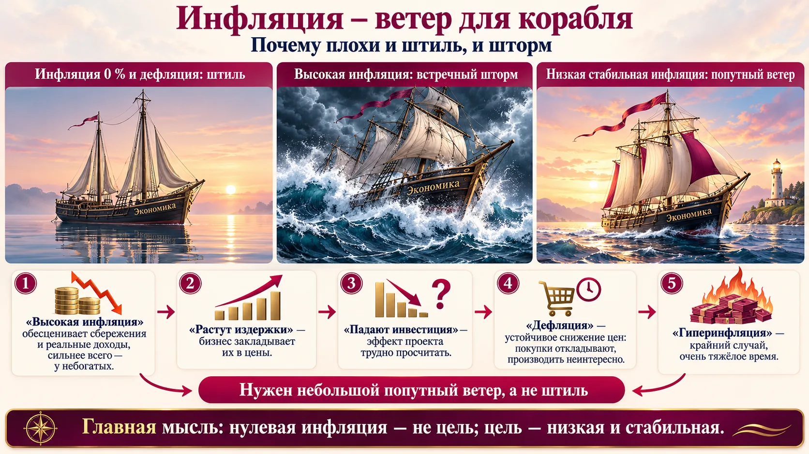
При высокой инфляции главный вред для бизнеса — горизонт планирования. Проверяйте инвестпроекты по реальной ставке (ставка по кредиту минус ожидаемая инфляция) и на нескольких сценариях инфляции. Тренажёр «Реальная доходность» — в курсе экономики.
Таргетирование: почему цель — 4 %
Не ноль и не семь. И почему это задача Центрального банка.
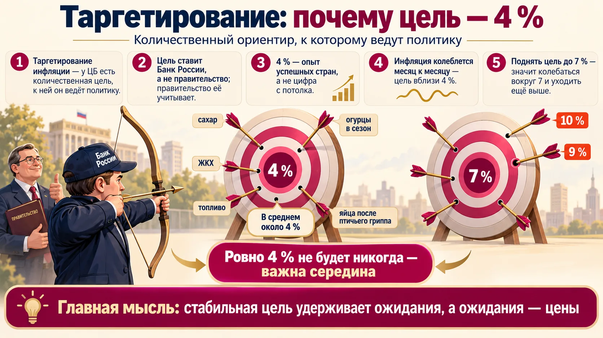
Таргетирование инфляции — задача Центрального банка, а не правительства. Правительство учитывает цель, политики согласуются, но цель ставит и достигает ЦБ.
- 4 % — опыт успешных стран с режимом таргетирования, «не с потолка».
- Инфляция колеблется от месяца к месяцу (огурцы, сахар, яйца после птичьего гриппа) — ровно 4 не будет никогда, поэтому цель «вблизи».
- Если поднять цель до 6–7 %, инфляция будет колебаться уже вокруг неё и уходить ещё выше — «это ещё хуже».
- Сейчас средняя инфляция около 6 %: бюджет, топливо (непредвиденно), тарифы ЖКХ не по графику.
Банк России перешёл к режиму таргетирования инфляции в конце 2014 года, одновременно с плавающим курсом рубля; цель 4 % действует с 2017 года. Многие центробанки развитых стран держат цель 2 %; у развивающихся экономик она обычно выше — у них сильнее колебания цен и структурные сдвиги.
Источник: Банк России, раздел «Денежно-кредитная политика» (cbr.ru).
Ключевая ставка: охладить перегрев
Основной инструмент ДКП. Работает на спрос — и только на спрос.
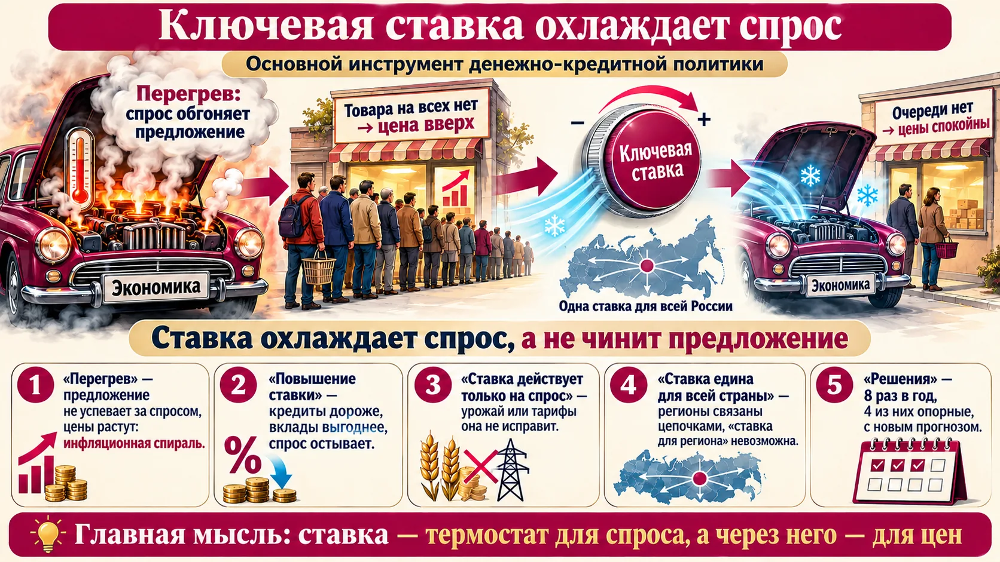
Ставка едина для всей России: регионы связаны цепочками поставок, экономика не закрытая — «ставка для отдельного региона» невозможна. Поэтому ЦБ таргетирует общероссийскую инфляцию.
Ставка охлаждает исключительно спрос. На разовые шоки предложения (неурожай, тариф, топливо) она не направлена: ставкой нельзя вырастить свёклу или проложить трубопровод.
- «Снизить слишком рано» — инфляция уходит вверх и раскручивает ожидания.
- «Резко поднять до 21 %» — через лаг экономика переохлаждается, инфляция уходит ниже цели.
- «Ожидания заякорены» — та же ставка даёт цель гораздо быстрее. Это и есть сила коммуникации (раздел 8).
- Подвигайте лаг: чем он длиннее, тем дольше ставка «не работает» и тем сильнее соблазн её передёрнуть.
Трансмиссия: как ставка доходит до цен
Процентный канал по шагам — и почему путь занимает больше года.
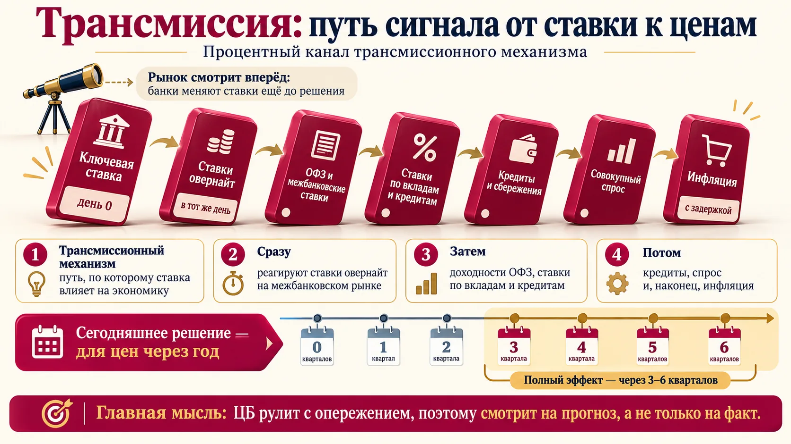
Решение по ставке в полной мере сказывается на экономике через 4–6 кварталов (по словам лектора). Поэтому решения принимают по прогнозу, на моделях, и иногда они кажутся слишком жёсткими: ЦБ отвечает на инфляцию через год, а не на сегодняшнюю.
➕ Банк России: «от трёх до шести кварталов».
Банки меняют ставки по вкладам ещё до решения, если ожидают смягчения. Поэтому важен сигнал — формулировки пресс-релиза о будущей политике.
Рост кредитов на фоне жёсткой политики ЦБ разбирает качественно: например, «последний вагон» льготной ипотеки или ожидание подорожания машин.
Кредит, который вы берёте сегодня, будете обслуживать на фоне ставки через год. Смотрите на прогноз средней ключевой ставки в опорных решениях ЦБ (на 2027 год — 12,5–13,5 %, ➕ пресс-релиз 23.10.2026) и на сигнал в пресс-релизе, а не только на текущий уровень.
Ожидания: прогноз, который сбывается сам
Почему ЦБ смотрит на то, чего люди ждут, не меньше, чем на то, что уже случилось.
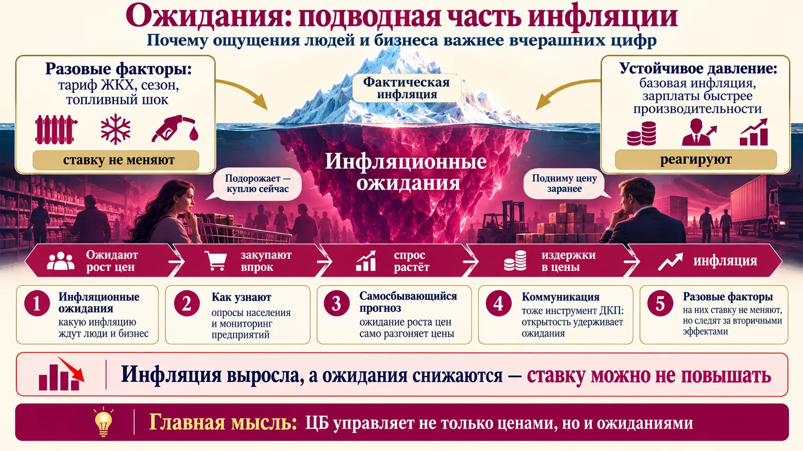
- Опросы населения.
- Мониторинг предприятий нефинансового сектора — около 30 лет; анкета из 14 вопросов, только качественные оценки: «как изменился спрос и как изменится в ближайшие 3 месяца».
Если инфляция выросла, а ожидания снижаются, ЦБ может не ужесточать.
Так записано в документах ЦБ: открытость решений и разъяснение политики влияют на ожидания. Сигнал — формулировки пресс-релиза о будущей политике (мягче или жёстче).
💬 «Не нужно разглядывать, какая брошь и с какой стороны».
На разовые факторы (тарифы ЖКХ, топливо) ставку не меняют: их доля в корзине мала, эффект размывается. Но бывают вторичные эффекты: подорожание топлива долго переносится в цены других товаров и в ожидания — тогда это уже устойчивое давление.
Ожидания ваших клиентов, поставщиков и сотрудников двигают цены сильнее, чем фактическая инфляция. Если в коллективе ждут «зарплату ×3», это давление на фонд оплаты труда раньше, чем у конкурентов. Если ваш поставщик ждёт роста цен, он поднимет их заранее.
Как принимают решение — и что решили 23 октября
Восемь заседаний в год, неделя тишины и резюме обсуждения.
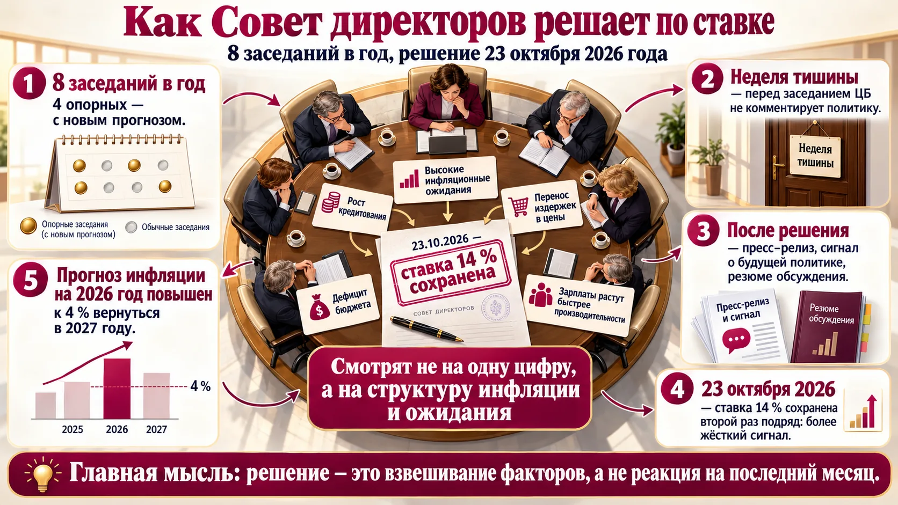
ЦБ смотрит не только на фактическую инфляцию. Важны её структура (разовый шок или устойчивое давление), инфляционные ожидания, кредит, рынок труда, бюджет.
- Ставка сохранена на 14 %. Это более жёсткий сигнал: цикл снижения не продолжили.
- Заседание опорное: прогноз инфляции на 2026 год повышен — цель в этом году не достигнута.
- Риски: высокие ожидания, повышенный перенос издержек в цены, зарплаты растут быстрее производительности, дефицит бюджета (бездефицитный — не раньше 2029), рост кредитования.
- Ставка 14 % сохранена второй раз подряд; до 14 % её снизили в июле 2026.
- Годовая инфляция ≈ 6,8 %.
- Прогноз инфляции на конец 2026 года — 7,1–7,6 %, возврат к 4 % — в 2027 году.
- Средняя ключевая ставка в 2027 году — 12,5–13,5 %.
- Следующее заседание — 18 декабря 2026 года.
Источник: Банк России, пресс-релиз о ключевой ставке, cbr.ru.
Закладывайте в бизнес-план прогноз ЦБ: инфляция около 4 % в 2027 году, средняя ставка 12,5–13,5 %. И сделайте стресс-сценарий, если цель снова не будет достигнута. Почитайте резюме обсуждения — там видно, какие варианты лежали на столе и какие риски ЦБ считает главными.
Эльвира Набиуллина
Председатель Банка России с 2013 года. При ней ЦБ перешёл к плавающему курсу рубля и таргетированию инфляции (2014), провёл расчистку банковского сектора. Ведёт пресс-конференции после решений по ключевой ставке.
Отделение в регионе: глаза и голос ЦБ
Чем занимается отделение в Ярославле и как голос региона доходит до Совета директоров.
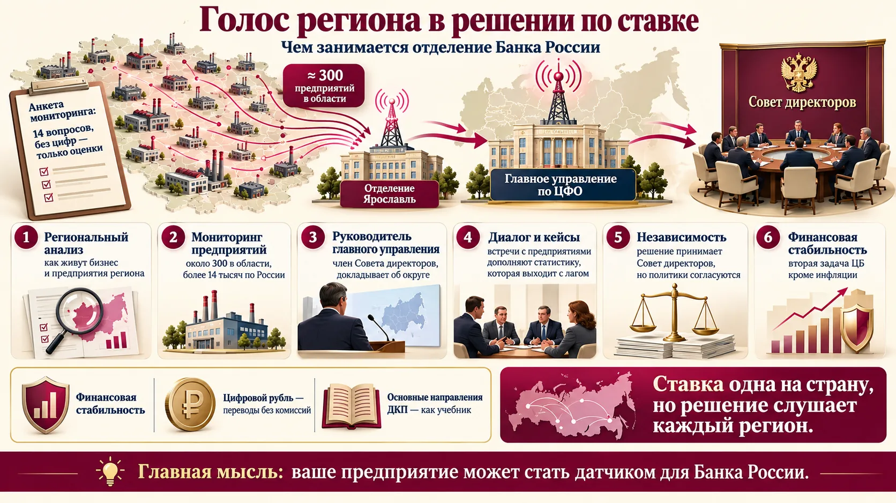
- Официальная статистика (с лагом; данные ОПК закрыты).
- Данные кредитных организаций — кредиты и депозиты, точные.
- Налоговые данные, кассовая техника, платёжная система.
- Мониторинг предприятий: в Ярославской области ≈300 участников; по России, по словам лектора, более 15 тыс. (➕ по данным ЦБ — более 14 тыс.). Выборку держат репрезентативной по отраслям.
- Прямой диалог с руководителями и отраслевыми союзами, кейсы (визит в лакокрасочный кластер региона).
- По закону Банк России независим в решениях по ставке; решает Совет директоров. Но политики согласуются с правительством.
- ЦБ не влияет на ВВП напрямую, но через низкую стабильную инфляцию создаёт условия для роста.
- Кроме ДКП есть политика финансовой стабильности — устойчивость финансовой системы.
- Некоторые показатели осмысленны только для всей страны: например, наличные — с ними ездят по регионам.
Создан для расчётов; сейчас переводы в цифровых рублях без комиссий. Дешёвого кредита «в цифровых рублях» он не даёт. Спикер: «не может быть выгодным и удобным во всех отношениях»; «это не мой проект».
- Предприятие может стать участником мониторинга: анкета без цифр, 14 качественных вопросов — и ваш голос попадает в доклад Совету директоров.
- Ходите на коммуникационные сессии после решений — вход свободный, можно задать вопрос.
- Отделение по запросу приходит на предприятия с лекциями по финансовой грамотности и кибермошенничеству.
Что вынести со встречи
Отмечайте пункт, когда можете объяснить его своими словами без подсказки. Отметки сохраняются в браузере.
Встреча усвоена — можно объяснять коллегам.
Проверьте себя
Четырнадцать вопросов по встрече. После ответа — правильный вариант и разбор.
1. Что такое инфляция?
2. Летом огурцы подешевели на 20 %. Это…
3. Кто считает официальную инфляцию в России?
4. Базовая инфляция — это…
5. Чем плоха нулевая или отрицательная инфляция?
6. Почему цель — 4 %, а не 7 %?
7. Таргетирование инфляции — это задача…
8. На что прежде всего влияет ключевая ставка?
9. Можно ли установить отдельную ключевую ставку для региона с высокой инфляцией?
10. Через сколько решение по ставке в полной мере сказывается на экономике (Банк России)?
11. Какой порядок звеньев процентного канала верный?
12. Инфляция чуть выросла, но инфляционные ожидания снижаются и кредит замедляется. Что, скорее всего, сделает ЦБ?
13. Что такое «неделя тишины»?
14. Решение Банка России 23 октября 2026 года:
Отвечено: 0 / 14
Шпаргалка: ДКП за одну минуту
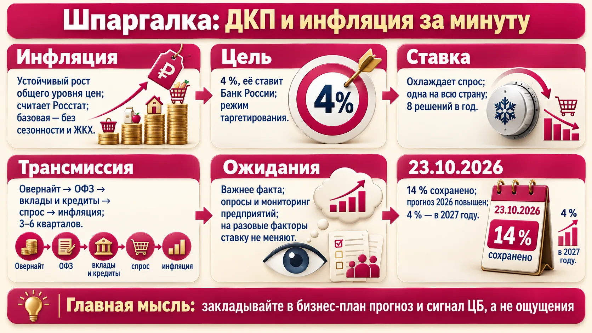
- Цель политики — расти у потенциала без резких колебаний. Потенциал поднимают бизнес и государство, колебания сглаживают ЦБ и бюджет.
- Инфляция — устойчивый рост общего уровня цен. Считает Росстат по ИПЦ; устойчивое давление видно по базовой инфляции.
- Ноль — тоже плохо: люди откладывают покупки. Нужен небольшой попутный ветер — 4 %.
- Цель ставит и достигает ЦБ (таргетирование с конца 2014, цель 4 % с 2017).
- Ключевая ставка охлаждает спрос, едина для страны, на разовые шоки предложения не направлена.
- Трансмиссия: ставка → овернайт → ОФЗ → ставки банков → кредит → спрос → инфляция. Лаг 3–6 кварталов, поэтому решают по прогнозу.
- Ожидания — самосбывающийся прогноз; коммуникация ЦБ — тоже инструмент.
- 23.10.2026: 14 % сохранена, прогноз на 2026 — 7,1–7,6 %, к 4 % — в 2027, следующее заседание 18.12.2026.
- «Основные направления единой государственной денежно-кредитной политики» — «может быть как учебник».
- Резюме обсуждения ключевой ставки — после каждого решения.
- ИАМ об инфляции в регионе — на странице Отделения Ярославль на cbr.ru.
- fincult.info — калькулятор личной инфляции и материалы по финансовой грамотности.